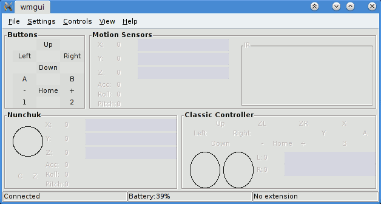
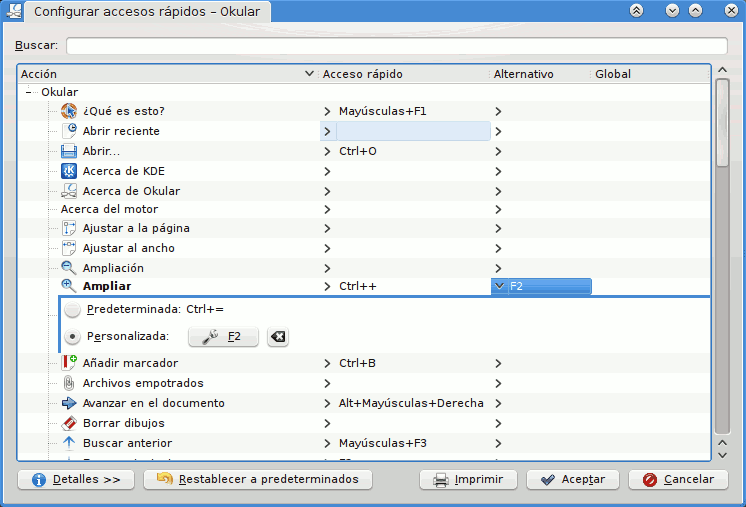
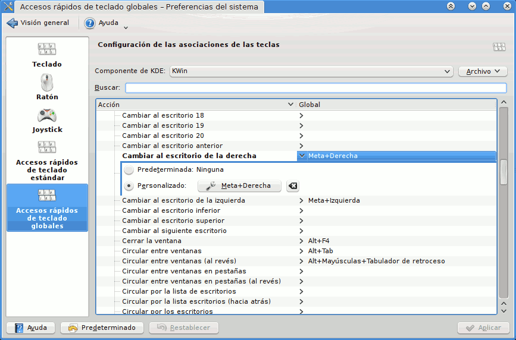
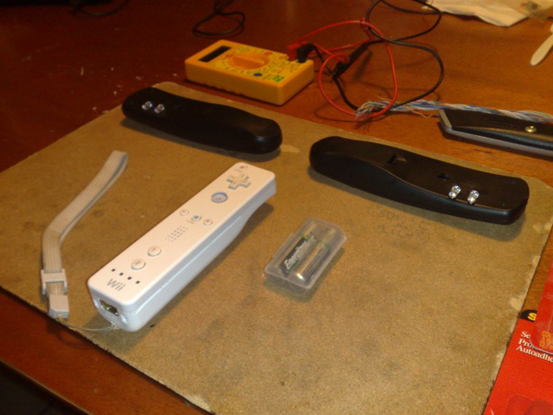
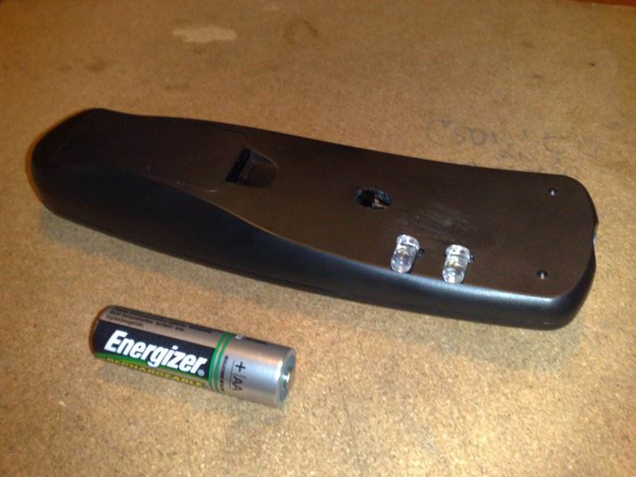
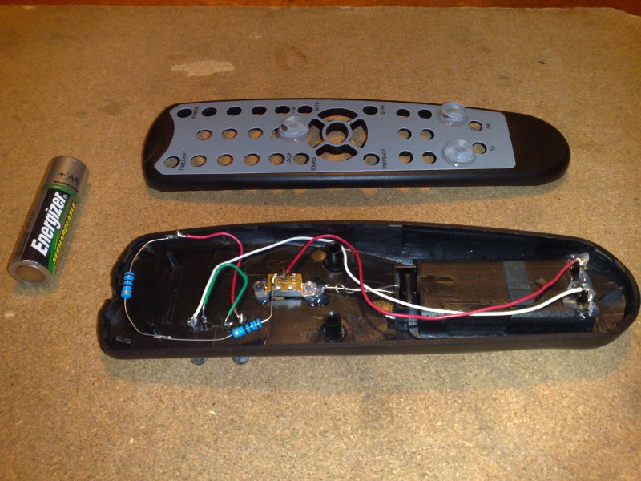

Instalación de CWiid 0.6.00: Wiimote en GNU/Linux
Pasos para instalar en Gentoo Linux el CWiid (versión 0.6.00) que es una colección de herramientas programadas en C para usar el wiimote.
26 October 2010
Wii Remote (Control Remoto Wii en Latinoamérica, Mando de Wii en España o Wiimote en el mundo gamer) es el control principal de la Wii de Nintendo. Este dispositivo tiene estas cualidades:
- Botones A, B, +, home, -, 1 y 2.
- Sensores de aceleración y posición en el espacio 3D.
- Sensor que detecta a donde está apuntando, por medio de un visor infrarrojo y leds sobre la pantalla.
- Leds que indican la carga de la batería y el número del control.
- Bocina integrada.
- Puede vibrar.
- Comunicación inalámbrica via bluetooth.
Aparte del magnífico papel que este dispositivo tiene con los video juegos, podemos darle un gran número de usos con GNU/Linux. Entre los cuales están:
- Controlar tus presentaciones de forma inalámbrica (en esta guía No. 10).
- Usarlo como sustituto del mouse apuntando directamente a la proyección (No. 12).
- Jugar SuperTux usándolo como joystick inalámbrico.
- Hacer de cualquier pantalla un touchscreen
- Etcétera
A continuación describiré los pasos para instalar en Gentoo Linux el CWiid (versión 0.6.00) que es una colección de herramientas programadas en C para usar el wiimote.
Nota: Los comandos que vea con $ son ejecutados desde su cuenta de usuario. Mientras que los comandos que inicien con # deben ejecutarse como root o con sudo.
Video
1) Configure su kernel
Ya que el wiimote se comunica vía bluetooth es indispensable que su computadora tenga ese dispositivo y que opere correctamente.
Para configurar el soporte de bluetooth en su kernel, active las siguientes opciones en la configuración del mismo. Consulte documentación sobre cómo compilar su kernel si es necesario.
[*] Networking support --->
<M> Bluetooth subsystem support --->
<M> L2CAP protocol support
<M> SCO links support
<M> RFCOMM protocol support
[*] RFCOMM TTY support
<M> BNEP protocol support
[*] Multicast filter support
[*] Protocol filter support
<M> HIDP protocol support
Bluetooth device drivers ---> # ESCOJA EL CONTROLADOR O MARQUE TODOS
<M> HCI USB driver # ESTE ES EL CONTROLADOR DE MI EQUIPO
Para usar el wiimote es necesario habilitar el módulo uinput en el kernel con:
Device Drivers --->
Input device support --->
[*] Miscellaneous devices --->
<M> User level driver support
Guarde los cambios, compile e instale el kernel y reinicie su equipo.
2) Revise que haya comunicación por bluetooth
En el paso anterior compilamos como módulos (M) las opciones del kernel. Revise si su distribución los cargó al encender el equipo con:
$ lsmod
Si no, cárguelos manualmente. Ejecute modprobe (como root) con el módulo que corresponda a su controlador bluetooth, en mi caso es:
# modprobe -v btusb
Como primera prueba, ejecute el comando hciconfig (como root), deberá mostrarle información como la siguiente:
# hciconfig
hci0: Type: USB
BD Address: 00:00:00:00:00:00 ACL MTU: 310:10 SCO MTU: 64:8
UP RUNNING PSCAN
RX bytes:1152 acl:0 sco:0 events:55 errors:0
TX bytes:2878 acl:0 sco:0 commands:55 errors:0
Donde BD Address: 00:00:00:00:00:00 es la mac address del bluetooth de su computadora.
Luego, presione 1 y 2 al mismo tiempo en el wiimote. Los leds parpadeando son señal de que está en modo de asociación. Inmediatamente, en la terminal ejecute:
# hcitool scan
Scanning ...
00:00:00:00:00:00 Nintendo RVL-CNT-01
Donde 00:00:00:00:00:00 es la mac address del bluetooth del wiimote.
3) Configure que su cuenta de usuario pueda usar uinput
Cargue el módulo uinput si no lo ha hecho.
$ sudo modprobe -v uinput
Por defecto /dev/input/uinput tiene permisos de root:
$ ls -l /dev/input/uinput
crw-r----- 1 root root 10, 223 sep 24 22:47 /dev/input/uinput
Para que nuestra cuenta de usuario tenga permisos de lectura y escritura en uinput vamos a crear una nueva regla udev. Como root vamos a crear un nuevo archivo con el editor de textos más simple de GNU/Linux, el nano:
# nano /etc/udev/rules.d/50-wminput.rules
Escribimos el contenido siguiente donde señalamos que a la carga de uinput se den permisos al grupo uucp:
#
# 50-wminput.rules
#
# WiiMote requiere que se tenga permisos en uinput
KERNEL=="uinput", MODE="0660", GROUP="uucp"
Para usar esta configuración sin reiniciar el equipo, retiramos módulo uinput, recargamos udev, cargamos de nuevo uinput y revisamos:
# modprobe -r uinput
# udevadm control --reload-rules
# modprobe -v uinput
# ls -l /dev/input/uinput
crw-rw---- 1 root uucp 10, 223 sep 24 22:55 /dev/input/uinput
Por último agregue su usuario al grupo uucp
# gpasswd -a <USUARIO> uucp
Cierre su sesión como usuario y entre de nuevo para hacer efectivo este cambio.
4) Descargue el código fuente de CWiid
Ingrese al sitio oficial de CWiid
En la página inicial donde está el tema "Download", busque "Download the most recent version of CWiid." y de clic al vínculo. Al escribir esta guía la versión 0.6.00 de CWiid es la versión estable y su URL es http://abstrakraft.org/cwiid/downloads/cwiid-0.6.00.tgz
5) Desempaque el archivo comprimido
Ya sea por medio de su administrador de archivos, dando clic con el botón derecho y eligiendo desempacar en el menú contextual o en la terminal con el comando:
$ tar xvf cwiid-0.6.00.tgz
Luego, cámbiese al directorio resultante de haberlo desempacado.
$ cd cwiid-0.6.00
No deje de leer el archivo README.
6) Modifique el archivo bluetooth.c
Gentoo Linux está usando net-wireless/bluez que es la nueva versión de los programas y demonios para bluetooth.
CWiid en su versión 0.6.00 sigue necesitando a la versión anterior, lo cual lo hace incompatible con la nueva y marca error al compilar. Afortunadamente sólo hay que modificar una línea del código fuente para que funcione con bluez. Así que con vim o su editor favorito, edite el archivo:
$ vim libcwiid/bluetooth.c
Y en la línea 125, cambie "hci_remote_name" a "hci_read_remote_name" (sin comillas, por supuesto).
...
/* timeout (10000) in milliseconds */
if (hci_read_remote_name(sock, &dev_list[i].bdaddr, BT_NAME_LEN,
(*bdinfo)[bdinfo_count].name, 10000)) {
cwiid_err(NULL, "Bluetooth name read error");
err = 1;
goto CODA;
}
...
7) Configure y compile
De la forma tradicional:
$ ./configure
$ make
Revise que no haya mensajes de error en estos pasos.
8) Instale
La instalación por defecto se hará en /usr/local así que como root ejecute:
# make install
9) Uso de wmgui
El programa wmgui sirve para probar todas las características del wiimote. Le recomiendo que estrene su wiimote en GNU/Linux ejecutando wmgui:
$ wmgui

- Para asociar el wiimote elija menú File > Connect, presione 1 y 2 en el wiimote y de clic en Aceptar.
- Pruebe los botones del wiimote.
- Para terminar la sociación con el wiimote elija File > Disconnect.
10) Uso de wminput
El programa wminput es capaz de detectar cuando se presionan los botones y los datos del apuntador del wiimote para interpretarlos en nuestro sistema operativo.
No deje de leer el manual con man wminput. Por otro lado, ejecute wminput -h para mostrar un texto de ayuda. En síntesis tiene estas opciones:
-h Mostrar ayuda.
-c <ARCHIVO> Cargar un archivo específico de configuración.
-q Sólo mostrar errores en la terminal.
-r <SEGUNDOS> Automáticamente reconectar al Wiimote si este se desconectara.
-w Esperar infinitamente a que se conecte un Wiimote
-d Combina -q, -r y -w.
Encontrará archivos básicos de configuración en /usr/local/etc/cwiid/wminput/
La documentación recomienda mantener la configuración personal en el directorio oculto .CWiid en su home; aunque estos archivos pueden estar en cualquier parte. Así que creamos ese directorio con:
$ mkdir ~/.CWiid/
El primer ejemplo de configuración es para controlar las presentaciones en PDF con Okular. ¿Porqué Okular? Bueno, porque la gran variedad de programas para KDE te permiten personalizar los atajos de teclado fácilmente. Para empezar creamos el archivo:
$ nano ~/.CWiid/okular.conf
Con este contenido:
#
# ~/.CWiid/okular.conf
#
# Configuración para usarse en Okular
#
# Wiimote Tecla Acción en Okular
Wiimote.A = KEY_PAGEDOWN # Pagina siguiente
Wiimote.B = KEY_PAGEUP # Pagina anterior
Wiimote.Up = KEY_UP # Flecha arriba
Wiimote.Down = KEY_DOWN # Flecha abajo
Wiimote.Left = KEY_LEFT # Flecha izquierda
Wiimote.Right = KEY_RIGHT # Flecha derecha
Wiimote.Home = KEY_HOME # Primer diapositiva
Wiimote.Minus = KEY_F4 # Reducir
Wiimote.Plus = KEY_F2 # Ampliar
Luego configure los atajos de teclado de Okular: ejecútelo, ingrese en Preferencias > Configurar los accesos rápidos y haga los cambios que menciono en los comentarios del archivo anterior.

IMPORTANTE: Si la instación de CWiid fue en /usr/local debemos exportar la variable de entorno PYTHONPATH antes de ejecutar wminput en nuestra terminal. De lo contrario aparecerá el error ImportError: No module named cwiid.
$ export PYTHONPATH="/usr/local/lib/python2.6/site-packages"
Ahora ejecute:
$ wminput -w -c ~/.CWiid/okular.conf
Presione 1 y 2 en el wiimote, cámbiate a Okular y ¡a controlar tu presentación sin estar frente a la laptop!.
11) Entorno de escritorio KDE 4
Qué mejor demostración del poder de GNU/Linux que con los efectos 3D de KDE 4. De esta forma puedo tener en un escritorio mi presentación y en otro mi explorador de archivos para ir abriendo videos, por ejemplo. Mi archivo de configuración de wminput para ese fin es el siguiente:
#
# ~/.CWiid/kde4.conf
#
# Configuración para usar KDE 4
#
Wiimote.A = KEY_ENTER # Enter, abrir un archivo en Dolphin
Wiimote.B = KEY_LEFTMETA # Tecla Win, mantenga presionado
Wiimote.Up = KEY_UP # Flecha arriba
Wiimote.Down = KEY_DOWN # Flecha abajo
Wiimote.Left = KEY_LEFT # Flecha izquierda
Wiimote.Right = KEY_RIGHT # Flecha derecha
Wiimote.Home = KEY_HOME # Okular, primer diapositiva
Wiimote.Minus = KEY_PAGEUP # Okular, anterior
Wiimote.Plus = KEY_PAGEDOWN # Okular, siguiente
Wiimote.1 = KEY_F # KMPlayer, video a pantalla completa
Wiimote.2 = KEY_END # KMPlayer, terminar y cerrar
Aquí necesitamos adecuar los atajos de teclado del entorno gráfico. Para ello ejecutamos Preferencias del Sistema, buscamos Teclado y ratón y dentro hallarás Accesos rápidos de teclado globales.
Luego en Componente de KDE elija KWin y cambie:
- Cambiar al escritorio de la derecha: Meta+Derecha
- Cambiar al escritorio de la izquierda: Meta+Izquierda
- Desktop Cube: Meta+Arriba
- Toggle Present Windows (All desktops): Meta+Abajo

También haga los cambios propios en Okular y KMPlayer (para ver videos).
Mantenga en un escritorio el Dolphin abierto con sus videos preferidos, en otro escritorio su presentación en Okular. Ejecute:
$ wminput -w -c ~/.CWiid/kde4.conf
Como observará, se convierte la combinación de botones en la combinación de teclas para rotar el cubo del escritorio: mantenga presionado B mientra oprime Derecha o Izquierda en el wiimote.
12) Stellarium
El Stellarium es un magnífico planetario para nuestra computadora; destaca por su realismo y facilidad de uso.
Con el fin de tener una gran experiencia de Stellarium por medio de CWiid vamos a aprovechar la capacidad de detectar a dónde esta apuntando el wiimote. Para ello necesitaremos tener dos luces infrarrojas (IR) en la base de la pantalla, que pueden ser por medio de un wii sensor bar fabricado por terceros, un par de pequeñas velas, o bien, si tienes las herramientas básicas de soldadura para circuitos y visitas la tienda de electrónica de tu localidad, podrás hacer fácilmente un par de dispositivos con leds IR como los que muestro a continuación:



Su servidor hackeó cuatro controles remotos que no usaba para convertirlos en dos dispositivos de luz IR. Observe el video How to Make a Wireless Wii Sensor Bar para ver otro trabajo similar.
Para probar el "apuntador" escriba la siguiente configuración en ~/.CWiid/apuntador.conf:
#
# ~/.CWiid/apuntador.conf
#
# Usar la capacidad de saber a donde apunta el wiimote
# para reemplazar al mouse. Necesita los leds IR.
#
include buttons # Cargamos la configuracion buttons
Plugin.ir_ptr.X = ABS_X # Puntero eje X
Plugin.ir_ptr.Y = ABS_Y # Puntero eje Y
El apuntador del wiimote se habilita con las líneas Plugin.ir_ptr.
Regresando al Stellarium, necesitamos saber los atajos de teclado propios de ese programa. Los encontrará en la página Keyboard actions del wiki de Stellarium. Con esa información, creamos un archivo de configuración para wminput como el siguiente:
#
# ~/.CWiid/stellarium.conf
#
# Configuración para usar Stellarium con apuntador IR
#
Wiimote.A = BTN_LEFT # Clic con el boton derecho
Wiimote.B = KEY_SPACE # Espacio, centrar en el objeto seleccionado
Plugin.ir_ptr.X = ABS_X # Apuntador IR eje X
Plugin.ir_ptr.Y = ABS_Y # Apuntador IR eje Y
Wiimote.Up = KEY_R # R, Arte de las constelaciones
Wiimote.Down = KEY_C # C, Lineas de las constelaciones
Wiimote.Left = KEY_V # V, Nombres de las constelaciones
Wiimote.Right = KEY_E # E, Rejilla ecuatorial
Wiimote.Minus = KEY_PAGEDOWN # AvPag, Alejarse
Wiimote.Home = KEY_8 # 8, Poner tiempo a ahora
Wiimote.Plus = KEY_PAGEUP # RePag, Acercarse
Wiimote.1 = KEY_L # L, Incrementar el salto de tiempo
Wiimote.2 = KEY_J # J, Decrementar el salto de tiempo
Los pasos a seguir son encender las fuentes de luz IR, cargar wminput con la configuración ~/.CWiid/stellarium.conf y ejecutar Stellarium.
13) Un bash script que nos facilite todo
Le recomiendo automatizar el arranque con este Bash Script que se encargará de cargar los módulos del kernel, definir la variable de entorno PYTHONPATH y lanzar wminput con la configuración.
1 2 3 4 5 6 7 8 9 10 11 12 13 14 15 16 17 18 19 20 21 22 23 24 25 26 27 28 29 30 31 32 33 34 35 36 37 38 39 40 41 42 43 44 45 46 47 48 49 50 51 52 53 54 55 56 57 58 59 60 61 62 63 64 65 66 67 68 69 70 71 72 73 74 75 76 77 78 79 80 81 82 83 84 85 86 87 88 89 | |
Guárdelo con el nombre de wiimote.sh y ejecútelo con la configuración como parámetro, por ejemplo:
$ ./wiimote.sh stellarium